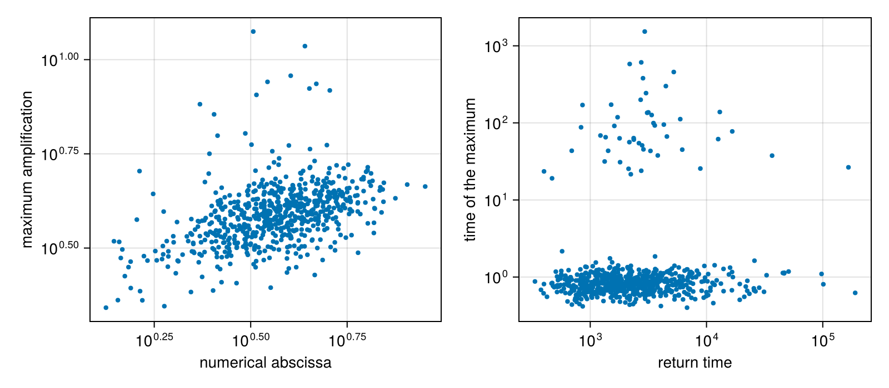
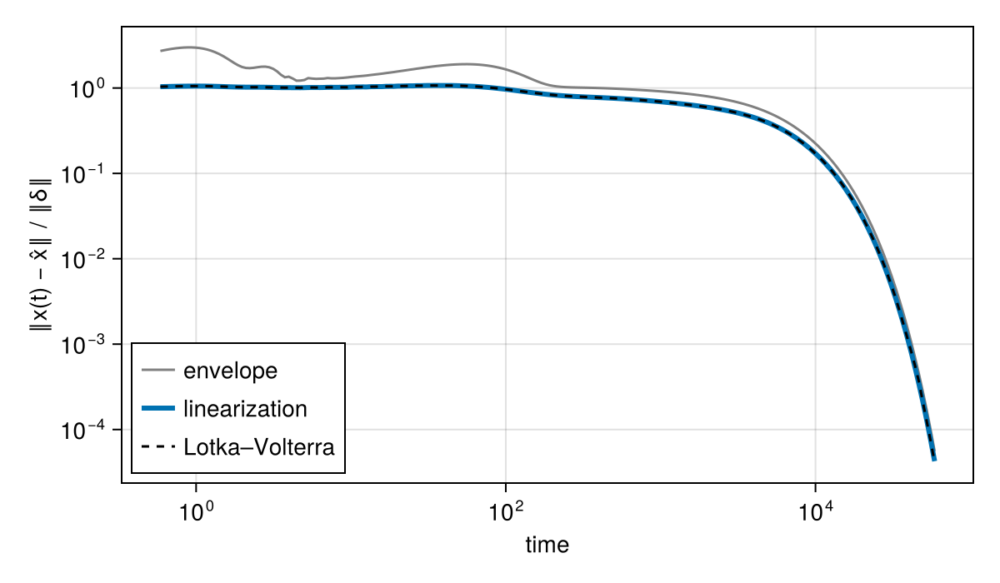
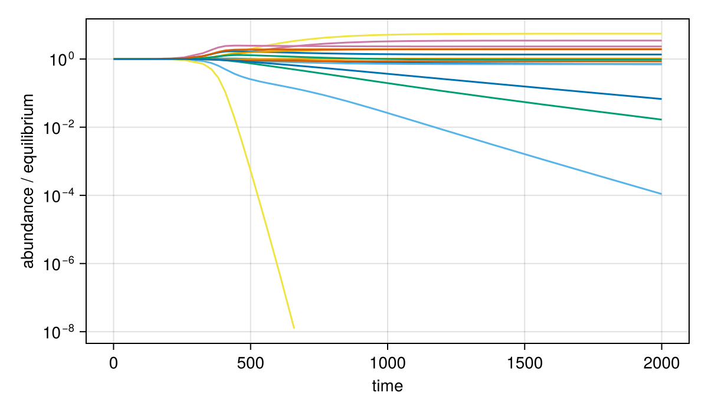

Dynamics
Each point of a FeasibleCommunities polytope is a Lotka–Volterra model dx/dt = x (r + A x) with equilibrium x, and its community matrix J = diag(x) A describes how small perturbations of that equilibrium evolve. This page measures the transient response from J alone, then integrates the dynamics to follow large perturbations and unstable communities.
Transients from the community matrix
A perturbation δ of a stable equilibrium evolves as exp(tJ) δ while it is small. The return_time -1 / λ, from the spectral_abscissa λ, sets its decay in the long run. Before that, perturbations can grow: the amplification_envelope ‖exp(tJ)‖ bounds the growth of every perturbation at time t, starts with slope equal to the numerical_abscissa, and reaches its max_amplification at some time before it decays (Neubert & Caswell 1997).
using FoodWebs, PolytopeSamplers, Random, CairoMakie
rng = Xoshiro(3)
web = niche_network(rng, 15, 0.15; basal_paths = true)
x = exp10.(2 .* rand(rng, 15) .- 1)
fc = FeasibleCommunities(web, x; efficiency = (0.0, 0.3))
communities = sample_communities(rng, fc; target_ess = 200).communities
stable = filter(c -> spectral_abscissa(c.J) < 0, communities[1:10:end])
length(stable), length(communities[1:10:end])(661, 800)peaks = [max_amplification(c.J) for c in stable]
fig = Figure(size = (800, 350))
ax1 = Axis(fig[1, 1]; xlabel = "numerical abscissa", ylabel = "maximum amplification", xscale = log10, yscale = log10)
scatter!(ax1, [numerical_abscissa(c.J) for c in stable], [p.amplification for p in peaks]; markersize = 6)
ax2 = Axis(fig[1, 2]; xlabel = "return time", ylabel = "time of the maximum", xscale = log10, yscale = log10)
scatter!(ax2, [return_time(c.J) for c in stable], [p.time for p in peaks]; markersize = 6)
fig
Every stable community here is reactive, and its envelope peaks within a third of its return time, often several orders of magnitude sooner. The numerical abscissa sets the early growth and the spectral abscissa the late decay of the same response.
Integrating the dynamics
Loading SciMLBase.jl enables lotka_volterra_problem, lotka_volterra and pulse_response. They take any SciML solver: Tsit5() from OrdinaryDiffEqTsit5.jl for nonstiff problems, or Rodas5P() from OrdinaryDiffEqRosenbrock.jl, which uses the analytic Jacobian and suits webs whose biomasses span orders of magnitude.
pulse_response follows a pulse away from the equilibrium and compares it with the linearization. A small pulse follows ‖exp(tJ) δ‖, below the envelope:
using OrdinaryDiffEqRosenbrock: Rodas5P
c = stable[1]
T = return_time(c.J)
times = exp10.(range(log10(T) - 4, log10(T) + 1; length = 200))
δ = 1.0e-3 .* x .* randn(rng, 15)
p = pulse_response(Rodas5P(), c, x, δ, times)
fig = Figure(size = (600, 350))
ax = Axis(fig[1, 1]; xlabel = "time", ylabel = "‖x(t) − x̂‖ / ‖δ‖", xscale = log10, yscale = log10)
lines!(ax, times, [amplification_envelope(c.J, t) for t in times]; label = "envelope", color = :gray)
lines!(ax, p.t, p.linear; label = "linearization", linewidth = 3)
lines!(ax, p.t, p.deviation; label = "Lotka–Volterra", linestyle = :dash, color = :black)
axislegend(ax; position = :lb)
fig
lotka_volterra integrates from any start and removes a species when its abundance falls below extinction_threshold while declining. From a start near the equilibrium of an unstable community, the dynamics move to another state, here with fewer species:
unstable = communities[findfirst(c -> spectral_abscissa(c.J) > 0, communities)]
s = lotka_volterra(Rodas5P(), unstable, x .* (1 .+ 1.0e-3 .* randn(rng, 15)), (0.0, 2.0e3))
fig = Figure(size = (600, 350))
ax = Axis(fig[1, 1]; xlabel = "time", ylabel = "abundance / equilibrium", yscale = log10)
for i in 1:15
alive = s.x[i, :] .> 0
lines!(ax, s.t[alive], s.x[i, alive] ./ x[i])
end
fig
count(s.survivors), filter(isfinite, s.extinction_times)(14, [701.5382735774386])FoodWebs.return_time — Function
return_time(J)The characteristic return time -1 / λ of an equilibrium with Jacobian J, where λ is the spectral_abscissa: the time over which a perturbation shrinks by a factor e in the long run (Neubert & Caswell 1997). Inf when the equilibrium is not stable.
FoodWebs.amplification_envelope — Function
amplification_envelope(J, t)The largest growth ‖exp(tJ)‖₂ at time t of a perturbation of an equilibrium with Jacobian J, over all perturbations (the amplification envelope of Neubert & Caswell 1997). Each perturbation's own growth ‖exp(tJ) δ‖ / ‖δ‖ lies below it. Its slope at t = 0 is the numerical_abscissa, and its decay rate as t → ∞ the spectral_abscissa.
FoodWebs.max_amplification — Function
max_amplification(J)The maximum of the amplification_envelope of a stable equilibrium with Jacobian J, and the time it is reached: a named tuple (amplification, time) (Neubert & Caswell 1997). The maximum is 1 at time 0 when the equilibrium is not reactive (numerical_abscissa(J) ≤ 0). Otherwise it is found on a grid of times growing by 5% from 10⁻³ of the shorter of the return time and 1 / numerical_abscissa(J), up to at least 20 return times and until the envelope is below 1, and refined by golden-section search. Throws an ArgumentError if J is not stable.
FoodWebs.lotka_volterra_problem — Function
lotka_volterra_problem(A, r, x0, tspan)
lotka_volterra_problem(community, x0, tspan)The ODEProblem of the Lotka–Volterra dynamics dx/dt = x (r + A x) from x0 over tspan, with its analytic Jacobian diag(r + A x) + diag(x) A for stiff solvers (load SciMLBase.jl to enable this method). A community is a named tuple with fields A and r, such as one from sample_communities.
FoodWebs.lotka_volterra — Function
lotka_volterra(alg, A, r, x0, tspan; extinction_threshold = 1e-9, kwargs...)
lotka_volterra(alg, community, x0, tspan; kwargs...)Integrate the Lotka–Volterra dynamics dx/dt = x (r + A x) from x0 over tspan with the SciML solver alg, such as Tsit5() from OrdinaryDiffEqTsit5.jl or Rodas5P() from OrdinaryDiffEqRosenbrock.jl (load SciMLBase.jl to enable this method). A species whose abundance falls below extinction_threshold (a number, or one per species) goes extinct: it is set to 0 and stays there. Species that start at or below the threshold are absent from the start. Other keywords, such as saveat, abstol and reltol, go to solve.
Returns a named tuple: the saved times t; the abundances x, one column per time; survivors, whether each species is present at the end; extinction_times, the time each species went extinct (Inf for survivors); retcode, the solver's return code; and the solution itself.
FoodWebs.pulse_response — Function
pulse_response(alg, A, r, x̂, δ, times; kwargs...)
pulse_response(alg, community, x̂, δ, times; kwargs...)The response of the Lotka–Volterra dynamics to a pulse δ away from the equilibrium x̂ (r + A x̂ = 0), integrated by lotka_volterra with solver alg and saved at times (load SciMLBase.jl to enable this method). Keywords go to lotka_volterra.
Returns a named tuple: t; deviation, the distance ‖x(t) - x̂‖ / ‖δ‖; linear, the same distance in the linearization, ‖exp(tJ) δ‖ / ‖δ‖ with J = diag(x̂) A; amplification, the largest deviation; time, when it is reached; and the trajectory from lotka_volterra. For small pulses deviation follows linear, which lies below the amplification_envelope of J. Throws an ArgumentError if x̂ is not an equilibrium or x̂ + δ has a negative abundance.